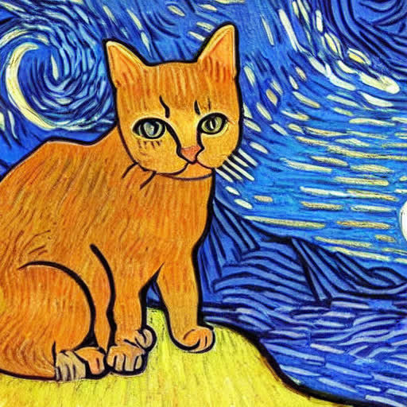
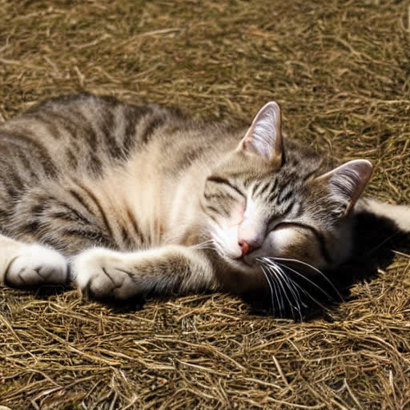
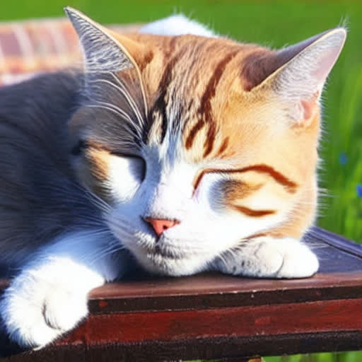
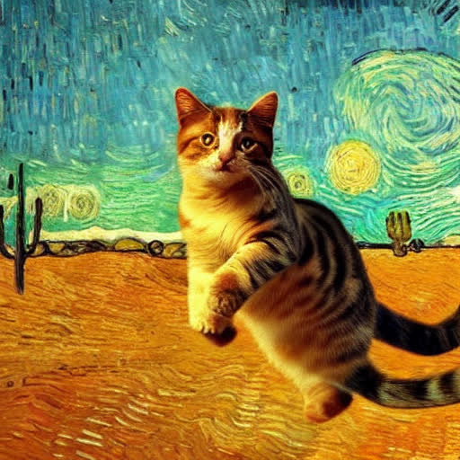
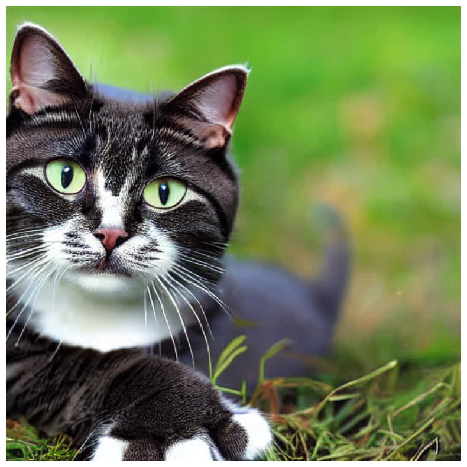
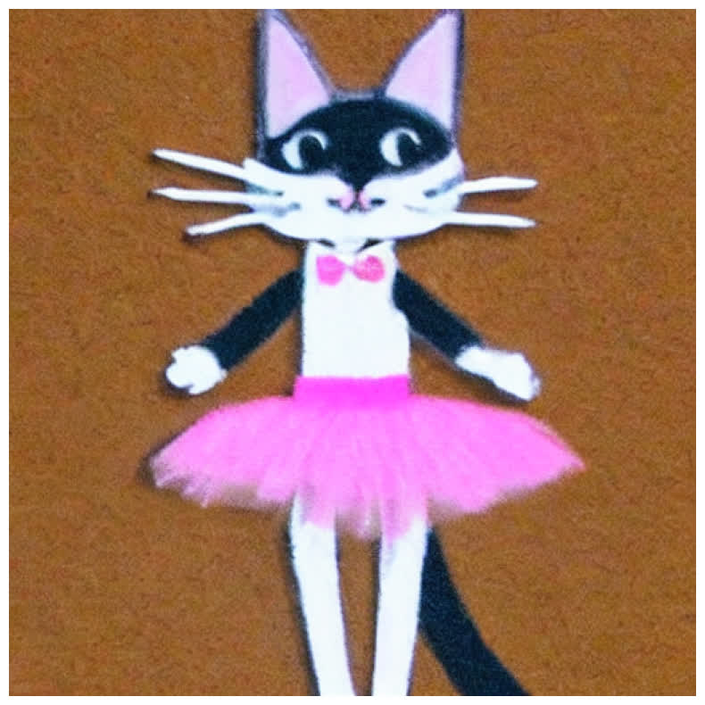
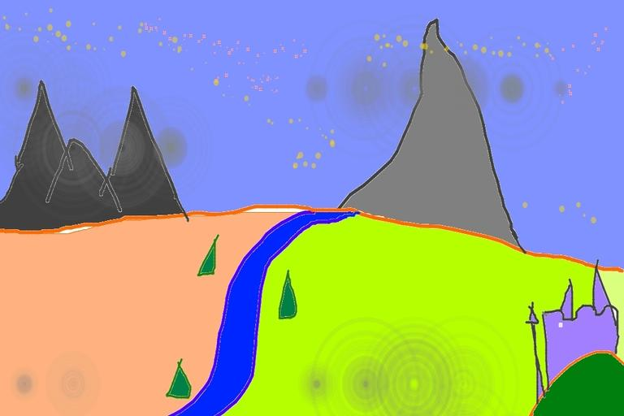
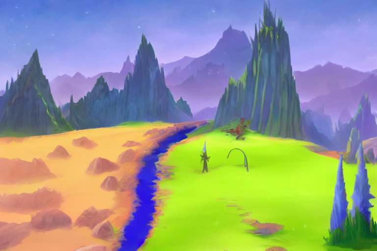

6.4 Diffusion from Scratch
Understanding Stable Diffusion from "Scratch"
Created Date: 2025-06-15
In this tutorial , we walked through all the building blocks of Stable Diffusion, including:
Ari Seff's What are Diffusion Models? is the model the scratch code on this page is implementing.
Principle of Diffusion models.
Model score function of images with UNet model.
Understanding prompt through contextualized word embedding.
Let text influence image through cross attention.
Improve efficiency by adding an autoencoder.
Large scale training.
6.4.0 MNIST Diffusion from Scratch
Before loading a pretrained pipeline, add noise to a tiny image and train a UNet to take it off. mnist_diffusion_scratch.py does that on \(8 \times 8\) canvases with a white square in the middle. The amount of noise is a scalar in \([0, 1]\) per example:
def corrupt(clean, amount):
noise = torch.randn_like(clean)
amount = amount.view(-1, 1, 1, 1)
return clean * (1 - amount) + noise * amount, noiseAmount 0 leaves the square untouched. Amount 1 replaces it with Gaussian noise. Those two limits are the asserts. A four-layer hourglass predicts the clean image from the noisy one: down \(1 \to 8\), pool, another \(8\)-channel convolution, upsample, add the skip, then a \(1 \times 1\) head. The loss is MSE against the clean square. One backward pass is enough to check the graph.
demo_mnist_diffusion.py is the same idea on real MNIST with a slightly wider BasicUNet. The rest of this chapter replaces the scratch UNet with the Stable Diffusion stack: a text encoder, a latent autoencoder, and a UNet that also sees a timestep and a prompt through cross-attention.
6.4.1 Playing with Stable Diffusion
It has many sections with loose order between them. You can:
Play with generating art from prompt.
See the effect of the parameters for generating process.
Visualizing the diffusion process and latents.
Looking under the hood of the sampling function.
Inspect the internal network architecture of the components of Stable Diffusion.
6.4.1.1 Loading Stable Diffusion
To run the code below, you need to install the diffusers library. You can do this by running:
pip install diffusers
import os
import numpy
import torch
import torch
from diffusers import StableDiffusionPipeline
from matplotlib import pyplotMake sure you have a GPU available, as Stable Diffusion requires significant computational resources. You can check if CUDA is available with:
assert torch.cuda.is_available(), "CUDA is not available. Please run on a machine with a GPU."Now, file loading_diffusion.py load the Stable Diffusion model. You will need to authenticate with the Hugging Face Hub to access the model weights. If you don't have an account, you can create one at Hugging Face .
Here fp16 checkpoint is loaded just to save memory and compute time. if you have a great gpu, you can remove the line revision="fp16", torch_dtype=torch.float16 :
pipe = StableDiffusionPipeline.from_pretrained(
"CompVis/stable-diffusion-v1-4",
revision="fp16",
torch_dtype=torch.float16,
use_auth_token=True
).to("cuda")
# Disable the safety checker for this example
def dummy_checker(images, **kwargs):
return images, [False] * len(images)
pipe.safety_checker = dummy_checker6.4.1.2 Generative Playground
Once the model is loaded, you can generate images from text prompts. The following code generates an image of a "lovely cat running in the desert in Van Gogh style, trending art." and displays it.
Generating an Image
prompt = "a lovely cat running in the desert in Van Gogh style, trending art."
image = pipe(prompt).images[0] # image here is in [PIL format](https://pillow.readthedocs.io/en/stable/)
# Now to display an image you can do either save it such as
os.makedirs("temp", exist_ok=True)
image.save(f"temp/lovely_cat.png")
pyplot.imshow(numpy.array(image)) # Convert PIL image to numpy array for display
pyplot.axis('off') # Hide axes
pyplot.show() # Display the image
Figure 1 - A Lovely Cat Generated by Stable Diffusion
Fixing the Random Seed
By creating a torch.Generator object and setting its seed with .manual_seed(42) , you ensure that the same sequence of random numbers is used each time the pipeline is run with this generator. This results in the same image being generated from the same prompt and other parameters:
generator = torch.Generator("cuda").manual_seed(42)
prompt = 'a sleeping cat enjoying the sunshine.'
image = pipe(prompt, generator=generator).images[0] # Generate image with a fixed seed
image.save(f"temp/sleeping_cat_seed.png")
pyplot.imshow(numpy.array(image)) # Convert PIL image to numpy array for display
pyplot.axis('off') # Hide axes
pyplot.show() # Display the image
Figure 2 - A Sleeping Cat with Fixed Seed
Changing (Denoising) Diffusion Steps
To generate images with different levels of detail, you can adjust the num_inference_steps parameter. This parameter controls how many steps the diffusion model takes to generate the image. More steps generally lead to higher quality images but take longer to compute:
prompt = 'a sleeping cat enjoing the sunshine.'
image = pipe(prompt, num_inference_steps=25).images[0]
image.save(f"temp/sleeping_cat_25.png")
pyplot.imshow(numpy.array(image)) # Convert PIL image to numpy array for display
pyplot.axis('off') # Hide axes
pyplot.show() # Display the imageFigure 3 - A Sleeping Cat with 25 Inference Steps
Adding Negative prompt
Adding negative prompt can control what you do not want.
prompt = "a sleeping cat enjoying the sunshine."
image = pipe(prompt, negative_prompt="tree and leaves").images[0]
image.save(f"temp/sleeping_cat_negative.png")
pyplot.imshow(numpy.array(image))
pyplot.axis("off")
pyplot.show()
Figure 4 - A Sleeping Cat with Negative Prompt
6.4.1.3 Visualizing the Diffusion in Action
To visualize the diffusion process, you can use a callback function that saves intermediate images at each step of the diffusion process. File diffusion_visualize.py is an example of how to implement such a callback function and use it during the image generation process:
image_reservoir = []
latents_reservoir = []
@torch.no_grad()
def saveimg_callback(pipe, step_index, timestep, callback_kwargs, frequency=10):
# You can get the latents from the kwargs
latents = callback_kwargs["latents"]
# Add your existing logic here, perhaps with a frequency check
if step_index % frequency == 0:
# Example of how to access and save the image
image = pipe.vae.decode(1 / 0.18215 * latents).sample
image = (image / 2 + 0.5).clamp(0, 1)
image_np = image.cpu().permute(0, 2, 3, 1).float().numpy()[0]
pil_image = pipe.numpy_to_pil(image_np)[0]
pil_image.save(f"temp/diffprocess/step_{step_index:04d}_{timestep}.png")
image_reservoir.append(image_np)
latents_reservoir.append(latents.detach().cpu())
# Important: The function must return the callback_kwargs
return callback_kwargsNow, you can use this callback function during the image generation process. The following code generates an image while saving intermediate steps:
image_reservoir = []
latents_reservoir = []
prompt = "a lovely cat running in the desert in Van Gogh style, trending art."
with torch.no_grad():
image = pipe(
prompt,
callback_on_step_end=functools.partial(saveimg_callback, frequency=1),
callback_on_step_end_tensor_inputs=["latents"],
).images[0]
image.save(f"temp/lovely_cat_vangogh.png")
mediapy.write_video("temp/lavely_cat_vangopy.mp4", image_reservoir, fps=10)
print("Lantents shape:", latents_reservoir[0].shape)
latents_np_seq = [
tsr[0, [0, 1, 2]].permute(1, 2, 0).numpy() for tsr in latents_reservoir
]
mediapy.write_video("temp/latents_seq.mp4", latents_np_seq, fps=10)
Figure 5 - A Lovely Cat in Van Gogh Style
Lantents shape: torch.Size([1, 4, 64, 64])
6.4.1.4 Write a Simple text2img Sampling Function
File pipe_simplified.py provide a simplified version of the sampling function! See what happened under the hood when you run pipe(prompt) we define a pipe_simplified function. Feel free to print out tensors and record their shape within this function!
def pipe_simplified(
prompt=["a lovely cat"],
negative_prompt=[""],
# `num_inference_steps` is the number of denoising steps. More denoising steps usually lead to a higher quality image at the expense of slower inference.
# It is recommended to use between 50 and 150 denoising steps, with 50 being a good default.
num_inference_steps=50,
# here `guidance_scale` is defined analog to the guidance weight `w` of equation (2)
# of the Imagen paper: https://arxiv.org/pdf/2205.11487.pdf . `guidance_scale = 1`
# corresponds to doing no classifier free guidance.
# Higher guidance scale encourages to generate images closely linked to the text `prompt`,
# usually at the expense of lower image quality.
# Guidance scale of 7.5 is a good default value.
# Guidance scale of 1.0 is equivalent to doing no classifier free guidance.
guidance_scale=7.5,
):The following code snippet shows how to get the text embeddings from the prompt using the tokenizer and text encoder of the Stable Diffusion pipeline:
# get prompt text embeddings
text_inputs = pipe.tokenizer(
prompt,
padding="max_length",
max_length=pipe.tokenizer.model_max_length,
return_tensors="pt",
)
text_input_ids = text_inputs.input_ids
text_embeddings = pipe.text_encoder(text_input_ids.to(pipe.device))[0]
bs_embed, seq_len, _ = text_embeddings.shape
print(f"Text embeddings shape: {text_embeddings.shape}")Text embeddings shape: torch.Size([1, 77, 768])
# get negative prompts text embedding
max_length = text_input_ids.shape[-1]
uncond_input = pipe.tokenizer(
negative_prompt,
padding="max_length",
max_length=max_length,
truncation=True,
return_tensors="pt",
)
uncond_embeddings = pipe.text_encoder(uncond_input.input_ids.to(pipe.device))[0]
print(f"Unconditional text embeddings shape: {uncond_embeddings.shape}")Unconditional text embeddings shape: torch.Size([1, 77, 768])
For classifier free guidance, we need to do two forward passes. Here we concatenate the unconditional and text embeddings into a single batch to avoid doing two forward passes:
# duplicate unconditional embeddings for each generation per prompt, using mps friendly method
seq_len = uncond_embeddings.shape[1]
uncond_embeddings = uncond_embeddings.repeat(batch_size, 1, 1)
uncond_embeddings = uncond_embeddings.view(batch_size, seq_len, -1)
text_embeddings = torch.cat([uncond_embeddings, text_embeddings])
print(f"Concatenated text embeddings shape: {text_embeddings.shape}")Unlike in other pipelines, latents need to be generated in the target device for 1-to-1 results reproducibility with the CompVis implementation:
latents_shape = (batch_size, pipe.unet.in_channels, height // 8, width // 8)
latents_dtype = text_embeddings.dtype
latents = torch.randn(
latents_shape, generator=generator, device=pipe.device, dtype=latents_dtype
)Now we can scale the initial noise by the standard deviation required by the scheduler. This is important for the diffusion process to work correctly:
# set timesteps
pipe.scheduler.set_timesteps(num_inference_steps)
# Some schedulers like PNDM have timesteps as arrays
# It's more optimized to move all timesteps to correct device beforehand
timesteps_tensor = pipe.scheduler.timesteps.to(pipe.device)
# scale the initial noise by the standard deviation required by the scheduler
latents = latents * pipe.scheduler.init_noise_sigmaFinally, we can run the main diffusion process. The following code iterates over the timesteps and performs the denoising steps:
# Main diffusion process
for i, t in enumerate(pipe.progress_bar(timesteps_tensor)):
# expand the latents if we are doing classifier free guidance
latent_model_input = torch.cat([latents] * 2)
latent_model_input = pipe.scheduler.scale_model_input(latent_model_input, t)
# predict the noise residual
noise_pred = pipe.unet(
latent_model_input, t, encoder_hidden_states=text_embeddings
).sample
# perform guidance
noise_pred_uncond, noise_pred_text = noise_pred.chunk(2)
noise_pred = noise_pred_uncond + guidance_scale * (
noise_pred_text - noise_pred_uncond
)
# compute the previous noisy sample x_t -> x_t-1
latents = pipe.scheduler.step(
noise_pred,
t,
latents,
).prev_sample
latents = 1 / 0.18215 * latents
image = pipe.vae.decode(latents).sample
image = (image / 2 + 0.5).clamp(0, 1)
# we always cast to float32 as this does not cause significant overhead and is compatible with bfloa16
image = image.detect().cpu().permute(0, 2, 3, 1).float().numpy()
return imageWe need GPU over 8 GB, otherwise you will get the error like below:
RuntimeError: CUDA error: out of memory
CUDA kernel errors might be asynchronously reported at some other API call, so the stacktrace below might be incorrect.image = pipe_simplified(
prompt=["a lovely cat"],
negative_prompt=["Sunshine"],
)
# The two lines below are the problem. Remove them.
image = pipe.numpy_to_pil(image)[0]
image.save(f"temp/lovely_cat_simplified.png")
pyplot.imshow(numpy.array(image))
pyplot.axis("off")
pyplot.show()
Figure 6 - A Lovely Cat Generated by Simplified Sampling Function
image = pipe_simplified(
prompt = ["a cat dressed like a ballerina"],
negative_prompt = [""],)
# The two lines below are the problem. Remove them.
image = pipe.numpy_to_pil(image)[0]
image.save(f"temp/dressed_car_simplified.png")
pyplot.imshow(numpy.array(image))
pyplot.axis("off")
pyplot.show()
Figure 7 - A Dressed Cat Generated by Simplified Sampling Function
6.4.1.5 Image to Image Translation Playground
Stable Diffusion also supports image-to-image translation, where you can provide an initial image and a prompt to guide the generation process. This is useful for tasks like style transfer or enhancing existing images.
model_path = "CompVis/stable-diffusion-v1-4"
device = "cuda" if torch.cuda.is_available() else "cpu"
pipe = StableDiffusionImg2ImgPipeline.from_pretrained(
model_path, revision="fp16", torch_dtype=torch.float16, use_auth_token=True
)
pipe = pipe.to(device)To use the image-to-image functionality, you need to provide an initial image. The following code fetches an image from a URL, resizes it, and saves it locally:
os.makedirs("temp", exist_ok=True)
response = requests.get(url)
init_img = Image.open(BytesIO(response.content)).convert("RGB")
init_img = init_img.resize((768, 512))
init_img.save("temp/sketch-mountains-input.jpg")
pyplot.imshow(init_img)
pyplot.axis("off")
pyplot.show()
Figure 8 - Sketch Mountains Input
Now, you can use the image-to-image pipeline to generate a new image based on the initial image and a text prompt. The strength parameter controls how much the initial image influences the final output. A value of 0 means the output is entirely based on the prompt, while a value of 1 means the output is entirely based on the initial image.
prompt = "A fantasy landscape, trending on artstation"
generator = torch.Generator(device=device).manual_seed(1024)
image = pipe(
prompt=prompt,
image=init_img,
strength=0.75,
num_inference_steps=50,
guidance_scale=7.5,
generator=generator,
).images[0]
image.save("temp/fantasy_landscape.png")
pyplot.imshow(image)
pyplot.axis("off")
pyplot.show()
Figure 9 - Fantasy Landscape Output
6.4.1.6 Write a Simple img2img Sampling Function
pipe_simplified.py always starts from Gaussian latents. Image-to-image sampling starts from a picture. img2img_sample.py downloads a sketch, resizes it to 768×512, and calls StableDiffusionImg2ImgPipeline with strength=0.75, 50 steps, and guidance_scale=7.5.
Strength chooses how far up the noise schedule that picture is pushed before denoising begins. The VAE encodes the sketch, the scheduler noises the latent to a timestep near strength times the horizon, and the same classifier-free loop as pipe_simplified walks back down. A strength near 0 leaves the encoded image almost intact. A strength near 1 discards the sketch and behaves like text-to-image. The prompt still arrives as encoder_hidden_states; only the initial latent and the first timestep change.
image = pipe(
prompt=prompt,
image=init_img,
strength=0.75,
num_inference_steps=50,
guidance_scale=7.5,
generator=generator,
).images[0]6.4.1.7 The Internal Structure of Model
pipe(prompt) is five modules, and pipe_simplified.py calls them in order. The tokenizer turns the string into at most 77 token ids. The CLIP text encoder maps those ids to a tensor of shape (1, 77, 768). The UNet reads a latent of shape (1, 4, 64, 64) together with the timestep and that text tensor. The scheduler turns the UNet's noise prediction into the previous latent. After the last step the latent is rescaled by 1 / 0.18215 and the VAE decoder maps it to RGB.
Classifier-free guidance doubles the batch: the unconditional embedding and the prompt embedding are concatenated, the UNet runs once, and the two noise halves are mixed with guidance_scale. loading_diffusion.py also replaces safety_checker with a function that returns every image unchanged, which is why the playground can save pictures the stock checker would have blanked.
6.4.2 Build Stable Diffusion U-Net Model
In previous section, we went over the various components necessary to make an effective diffusion generative model like Stable Diffusion.
As a reminder, they are:
Method of learning to generate new stuff (forward/reverse diffusion);
Way to link text and images (text-image representation model like CLIP);
Way to compress images (autoencoder);
Way to add in good inductive biases (U-net architecture + self/cross-attention);
In this section, you will implement pieces of each of the above, and by the end have a working Stable-Diffusion-like model.
In particular, you will implement parts of:
Basic 1D forward/reverse diffusion;
A U-Net Architecture for Working with Images;
The Loss Associated with Learning the Score Function;
An Attention Model for Conditional Generation;
An Autoencoder
6.4.2.1 Define our Unet Architecture
A UNet is an encoder–decoder whose skips keep the high-resolution layout that downsampling would otherwise throw away. demo_mnist_diffusion.py defines the smallest one we train, BasicUNet. The down path is three convolutions, 1→32, 32→64, 64→64, each followed by SiLU, with MaxPool2d after the first two stages. The up path mirrors them with Upsample, and each up layer adds the saved map from the matching resolution before the convolution.
That skeleton is enough to predict a clean MNIST digit from a noisy one. The Stable Diffusion UNet in net_models.py keeps the same hourglass and adds what BasicUNet does not have: a Gaussian Fourier embedding of the timestep, added at every resolution through a Dense layer, GroupNorm before the activation, and SpatialTransformer blocks so a conditioning vector can enter the feature maps.
6.4.2.2 Build Our ResBlock
A residual block computes a small correction and adds it to its input, so a stage can start as the identity. In net_models.py the ResBlock constructor builds three 3×3 convolutions, each mapping in_chan to itself with padding 1 so the spatial size stays put:
class ResBlock(nn.Module):
def __init__(self, in_chan, out_chan, stride=1, downsample=None):
super().__init__()
self.conv1 = nn.Conv2d(in_chan, in_chan, 3, stride=1, padding=1)
self.conv2 = nn.Conv2d(in_chan, in_chan, 3, stride=1, padding=1)
self.conv3 = nn.Conv2d(in_chan, in_chan, 3, stride=1, padding=1)The class has no forward yet, and out_chan and downsample are unused. A finished block still normalizes, applies SiLU, runs those convolutions, and returns their sum with the input. Time conditioning is the same side input UNet_Tranformer_attrb already uses: a Dense(embed) bias added after the first convolution.
6.4.2.3 Build Our Attention / Transformer
CrossAttention is one module for self-attention and cross-attention. Leave context_dim unset and the key and value maps read the same tokens as the query. Pass a context width and they read the conditioning sequence instead, which is how a text or attribute vector gets into an image feature. Scores are the usual scaled dot product,
and the softmax weights mix the values. TransformerBlock stacks three pre-norm residuals on that primitive: self-attention, cross-attention against the context, and a feed-forward network that expands to 3 * hidden_dim, applies GELU, and projects back. Each branch adds its input, so a zeroed block is a no-op.
6.4.2.4 Container of ResBlock and Spatial Transformers
SpatialTransformer is the adapter between a convolutional map and that token block. It stores the input, flattens height and width into one token axis (b c h w becomes b (h w) c), runs TransformerBlock, scatters the tokens back onto a map, and adds the original map. The residual around the whole module is why it can sit inside a UNet stage without changing the channel count.
UNet_Tranformer_attrb uses the pattern at the two lowest resolutions: after the stride-2 convolution, GroupNorm, and SiLU, attn4 (and, when the commented lines are enabled, attn3 and attn5) receives the map plus the embedded condition y_embed. There is no separate stack-of-blocks class. The stage is the convolution, the norm, and the spatial transformer written out in forward.
6.4.2.5 Putting it Together into UNet!
UNet_Tranformer_attrb.forward wires the pieces. Time goes through GaussianFourierProjection and a linear layer, then SiLU. The condition index y is an embedding of width text_dim. Each encoder stage is a convolution plus a broadcast time bias, GroupNorm, and SiLU. Channels run 3, 32, 64, 128, 256, with stride 2 after the first stage. Only the bottleneck attention, attn4, is active.
The decoder is ConvTranspose2d with output_padding=1 so the spatial size matches the skip. Before each transpose except the first, the up feature is added to the saved encoder map (h3, then h2, then h1). The last transpose emits 3 channels, and the network divides that tensor by marginal_prob_std(t) so the raw output is a score. demo_diffusion_training.py defines that standard deviation for the variance-preserving schedule:
6.4.2.6 Unit Test the Components
Before any training loop, a random tensor should survive the hourglass at the right shape. demo_mnist_diffusion.py checks BasicUNet with a batch of eight 28×28 maps:
net = BasicUNet()
x = torch.rand(8, 1, 28, 28)
print(net(x).shape)
print(sum(p.numel() for p in net.parameters()))The shape print should be torch.Size([8, 1, 28, 28]). The same check on UNet_Tranformer_attrb needs a time vector and a condition index y, and the spatial size must stay divisible by 8 because three stride-2 stages shrink the map. If a transpose and a skip disagree on height or width, this forward pass fails immediately, which is the failure you want before a training step.
6.4.2.7 Load Weights into our UNet!
loading_diffusion.py does not copy tensors into the class above. It builds the stock pipeline with StableDiffusionPipeline.from_pretrained("CompVis/stable-diffusion-v1-4", revision="fp16", torch_dtype=torch.float16) and moves it to CUDA. That call fills the tokenizer, text encoder, VAE, UNet, and scheduler from the Hub checkpoint.
load_state_dict will accept those UNet weights only when the parameter names and shapes match. UNet_Tranformer_attrb is a teaching subset: fewer residual stages, an attribute embedding in place of a 768-wide CLIP sequence, and a 3-channel image UNet rather than the 4-channel latent UNet. Use pipe.unet when you want samples from the checkpoint, and the class in net_models.py when you want to read how time, skips, and cross-attention share one forward pass.
6.4.3 Build a Diffusion Model (U-Net + Cross Attention)
The sampler calls a UNet that already knows how to denoise. Training is the step that teaches it. For the MNIST skeleton, demo_mnist_diffusion.py draws a noise scale per image, adds torch.randn_like noise, and regresses the network output toward the clean digit with MSE. Three epochs of Adam at 1e-3 are what that file runs; the loss curve it saves is the check that the hourglass is fitting.
The conditional score network has two inputs the MNIST net never sees. marginal_prob_std(t) both sets the scale of the denoising target and rescales the network output in forward. The attribute embedding y_embed is the context argument of SpatialTransformer, so the same weights denoise under different conditions. Classifier-free guidance at sample time is two evaluations of that UNet, one with a real index and one with the padding index, mixed by guidance_scale the way pipe_simplified.py mixes its two text embeddings.